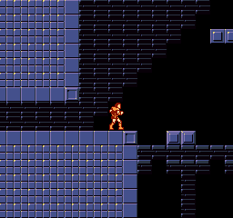

| Title | Porkvania |
| Date | 2017-08-31 18:23 |
| Category | Games |
| Language | Javascript |
| Platform | HTML5 |
| State | Finished |
| Started | 30 May 2015 |
| Web | Play |
My 3rd entry for the One hour game jam event.
The theme was "what is cooking, good looking?".
I have always been a fan of the Castlevania series, specially the first game. This was an opportunity to reference it, with an interesting gameplay concept.
It was fun to watch the search for the porkchops on stream.